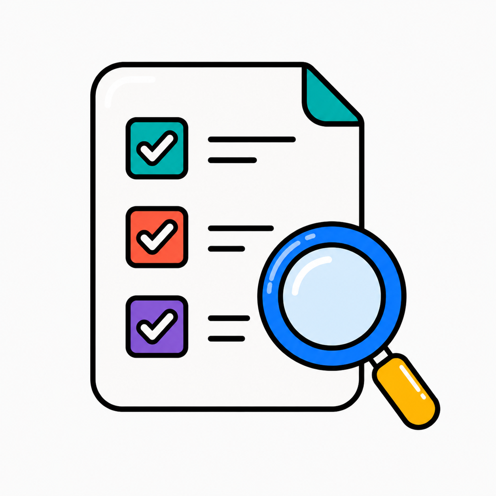
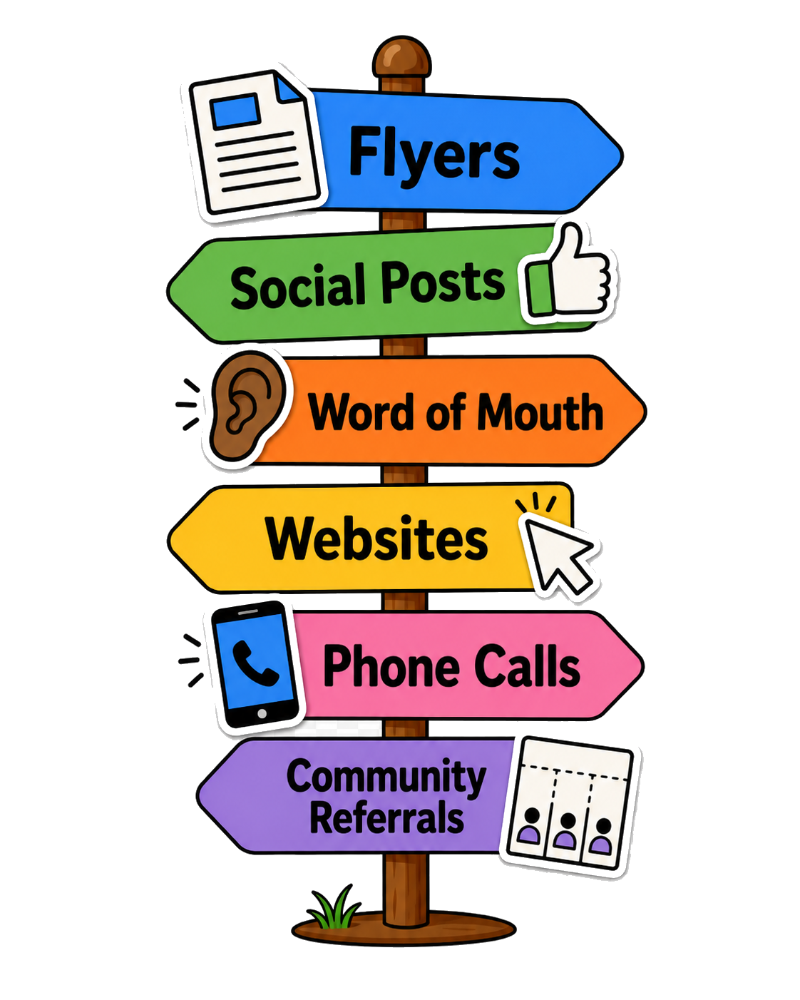
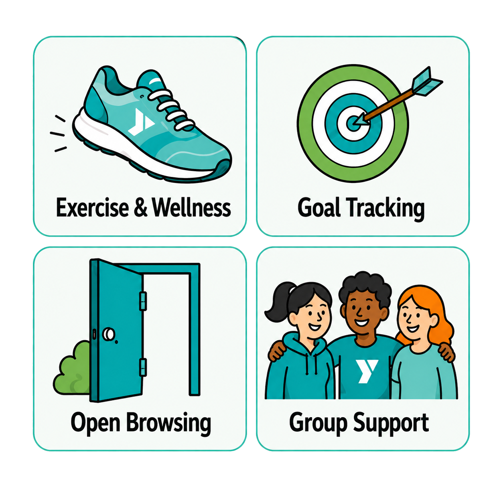
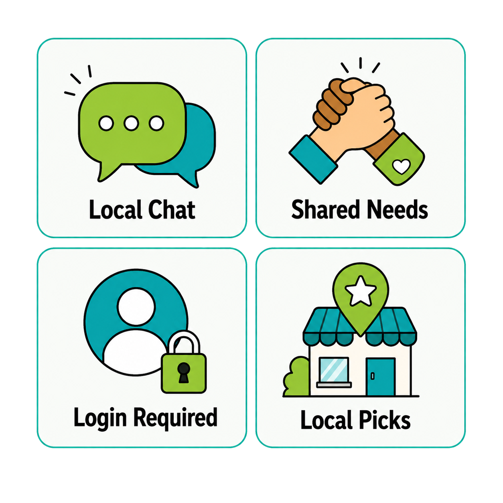
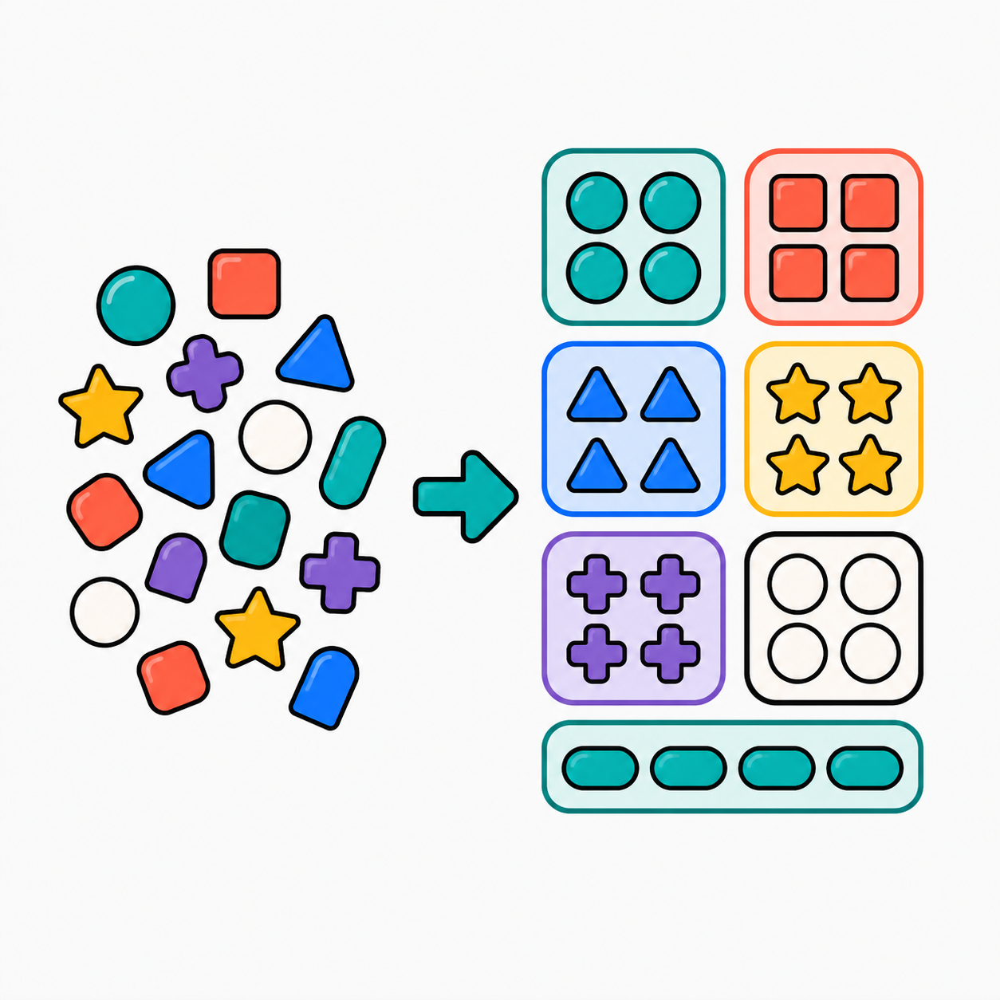
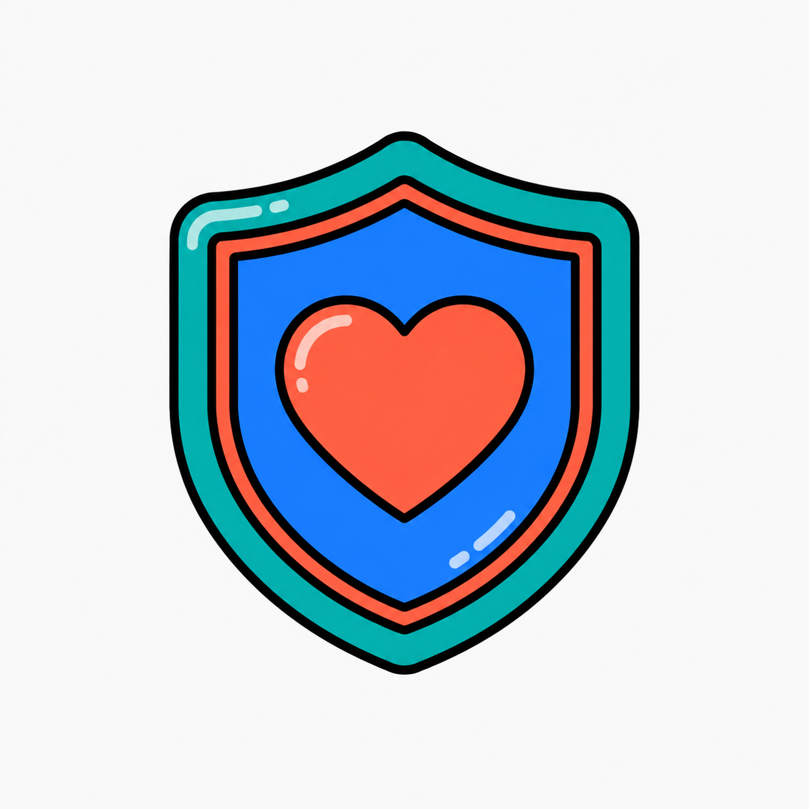
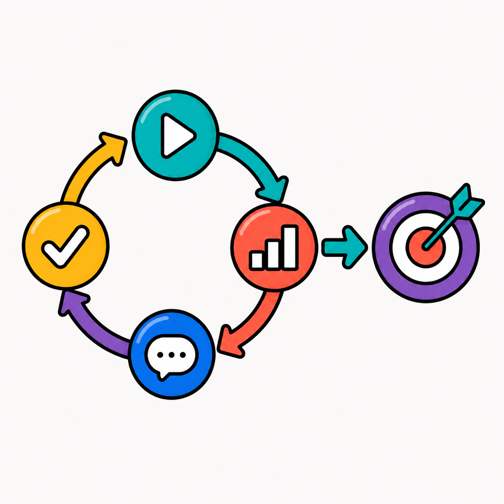
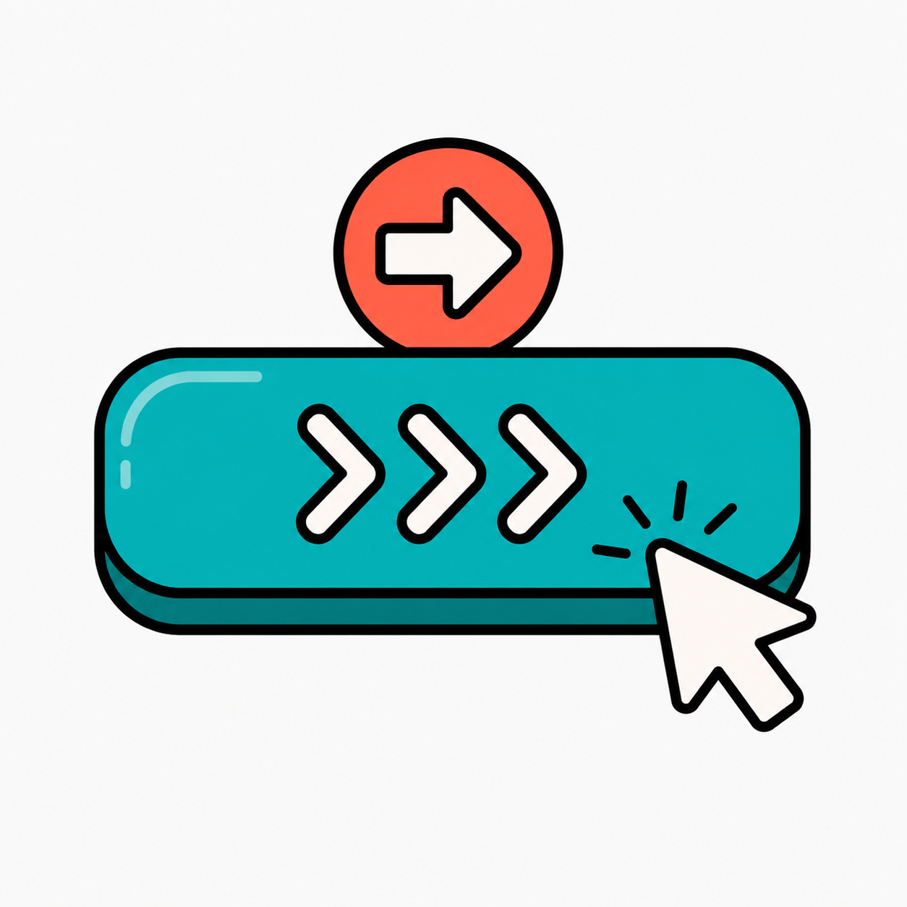
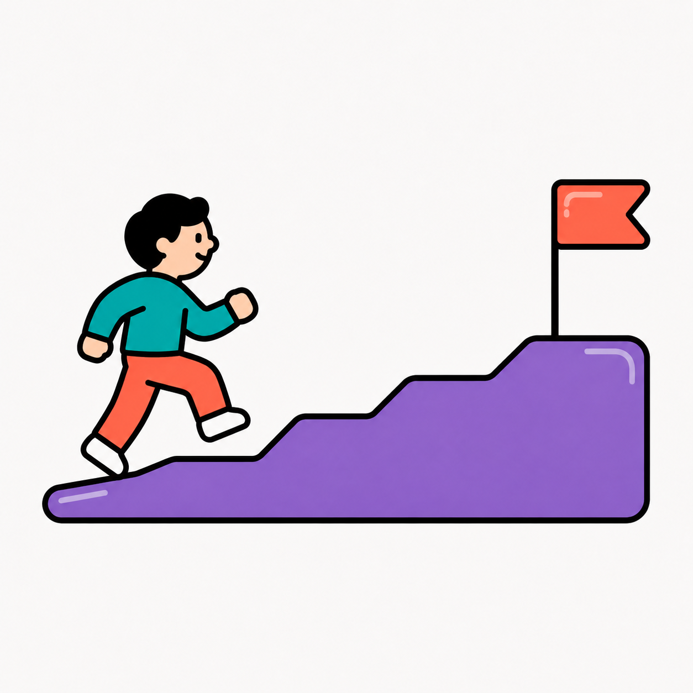
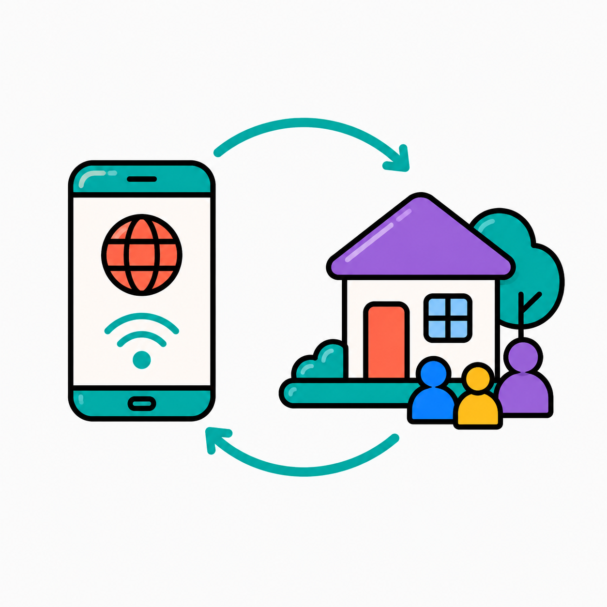

Am I eligible?
Information scent
A mobile app concept designed to help people discover local community programs, services, and events in one accessible place.



People often learn about community programs through flyers, social posts, referrals, websites, or word-of-mouth. That creates friction for anyone trying to quickly understand what help is available, who it is for, and how to take the next step.
Synergy Alliance was designed around a simple question: how might a mobile app make community resources easier to discover, compare, and act on?
 YMCA Mobile
YMCA Mobile


I looked at YMCA Mobile and Nextdoor because they represented two useful models: structured wellness participation and local community communication. The comparison helped clarify what Synergy Alliance needed to balance — program discovery, trust, goal context, and community support.
SYNTHESIS

Information scent

Sensemaking

Trust signals

Feedback loops

CTA clarity
Cognitive offloading

Progressive engagement

Omnichannel access
A resource list was not enough. The experience needed to reduce uncertainty at each decision point.
The opening screens introduce Synergy Alliance, featured goals, program categories, and quick pathways into the organization’s work.


Program screens help users understand what the initiative supports, how contributions connect to outcomes, and why the program matters.


Campaign screens break a broad Health & Wellness goal into specific initiatives, helping users compare needs and decide where they may want to contribute.


This project helped me understand how service access depends on information architecture, not just visual design.
A resource app has to do more than display information. It needs to help people understand what is available, why it matters, and what action to take.
Synergy Alliance was an early design concept, not a launched product. The next step would be validating the flow with community members, service providers, and people actively seeking support.